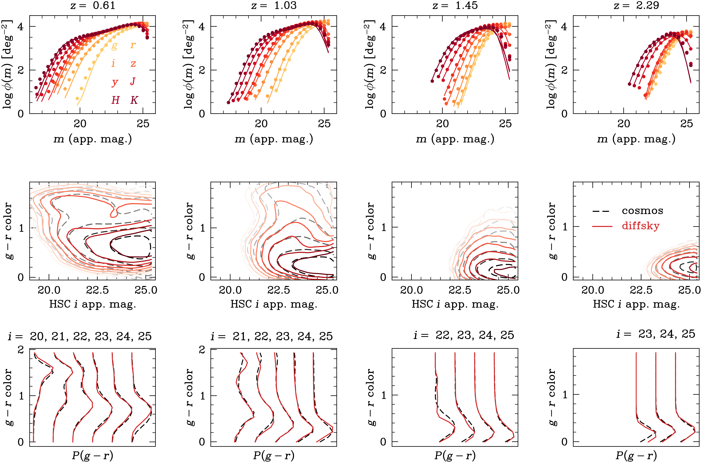

Kaustav Mitra
Postdoc, Argonne National Lab
Cosmological Physics & Advanced Computing group___________________________________
Email: kmitra@anl.gov and k.mitra.kaustav@gmail.com
___________________________________
Email: kmitra@anl.gov and k.mitra.kaustav@gmail.com
The goal is to jointly forward-model complex multi-wavelength multi-survey data, to better constrain galaxy formation physics and cosmological parameters. A crucial service work generated by this research is the creation of extremely realistic mock catalogues that are invaluable for the calibration and validation pipelines in different surveys, such as DESI, Rubin, Roman, etc. This invited talk at the Mock-NYC 2026 conference, offers a snapshot of where I was in this research as of mid-January, 2026. Learn more HERE.
I am leading the DESI Y3 full-scale joint analysis of clustering and g-g lensing, with the goal to precisely constrain cosmological parameters $\Omega_m$ and $S_8$ by extracting small-scale information from the data, while marginalizing over the uncertainties in the galaxy-halo connection.
More details HERE. [UNDER CONSTRUCTION, please check back later for updates on this ongoing research work.]
My PhD thesis work at Yale, with Frank C. van den Bosch, focused on using satellite kinematics to constrain the galaxy-halo connection and cosmological parameters, based on a novel Bayesian hierarchical likelihood inference framework called BASILISK, that I developed during my PhD thesis.
This recorded video of an invited talk [Feb 04, 2026] at Clemson University's Department of Physics and Astronomy online seminar gives a very brief overview of my PhD thesis work at Yale.
Learn more about my past research work HERE.
Please visit this SciX page to see my list of publications (only papers, i.e., excluding conference proceedings).
The traditional techniques of modelling the galaxy-halo connection, such as the HOD / CLF modelling or abundance matching, were mostly developed in the first decade of this millenium, primarily with SDSS Main Galaxy Sample in mind: a low redshift sample where galaxies do not evolve significantly and a simple r-band cut results in a fairly complete sample. But the nature of galaxy survey data is changing drastically with DESI, Rubin, ROMAN, DESI-2 and other ongoing and upcoming surveys. The traditional approach to galaxy-halo connection will soon prove to be insufficient to capture the unprecedented dynamic range and the complexity in the joint distribution of multi-wavelength multi-survey data across vast redshift ranges. Galaxies evolve drastically between redshifts 10 and 0.1, and moreover, key features in galaxy SEDs move in and out of survey filters; as a result of these two together, a simple magnitude or color cut will produce very different galaxy samples at different redshifts.
Modelling this complex data is not only crucial to improve our understanding of galaxy formation and evolution, but is also an essential step in using these galaxy surveys for (a) unbiased cosmology inference and (b) probing beyond-standard-model physics.
One can go beyond simplicity of HOD models or abundance matching by using a physics-driven galaxy formation model. Simulations and semi-analytic models (SAM) of galaxy formation produce realistic and complex populations of galaxies. However, they are not efficient enough to be used in an inference pipeline for modelling raw data with survey systematics, and to perform a full-fledged MCMC to marginalize over all the model uncertainties in the subgrid physics.
To address this dire necessity, my ongoing work focuses on empirical modelling of galaxy formation and evolution, with the goal to jointly forward-model complex multi-wavelength multi-survey data from different telescopes, to better constrain galaxy formation physics and cosmological parameters.
For example, the following plot shows the apparent magnitude distributions (top row), color-magnitude diagrams (middle row), and conditional color PDF for bins of i-band apparent magnitude cut (bottom row), of COSMOS-2020 data across different redshift bins (different columns). Overlayed with the data are the fits from diffsky, an empirical galaxy formation model that uses modern AI/ML library called JAX to enable end-to-end differentiable forward modelling of population-level galaxy SEDs for any type of galaxy survey.

My PhD thesis work at Yale focused on using satellite kinematics to constrain the galaxy-halo connection and cosmological parameters, based on a novel Bayesian hierarchical likelihood inference framework called BASILISK, that I developed during my PhD thesis.
This recorded video of an invited talk [Feb 04, 2026] at Clemson University's Department of Physics and Astronomy online seminar gives a very brief overview of my PhD thesis work at Yale.
The following are a few of my key highlights from my past research work: either demonstrating some particular methodology or showcasing a specific result.
UNDER CONSTRUCTION. Please check back later for updates on this ongoing research work.